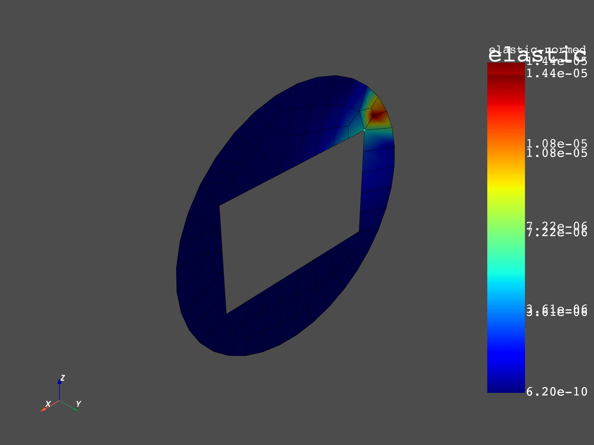

Note
Click here to download the full example code
Extrapolation Method for strain result of 2D-element¶
This example shows how to compute the nodal components elastic strain from Gaussian points (integration points) for 2D-element by using the method of extrapolation. Extrapolating results available at Gauss or quadrature points to nodal points for a field or fields container. The available elements are : linear quadrangle, parabolic quadrangle, linear hexagonal, quadratic hexagonal, linear tetrahedral, quadratic tetrahedral.
1st step : get the data source’s analyse of integration points(this file was add the commands APDL “EREXS, NO”).
2nd step: using operator of extrapolation to compute the nodal elastic strain.
3rd step: get nodal elastic strain result from data source’s analyse reference. The analyse was computed by ANSYS Mechanical APDL.
4th step: compare the results between nodal elastic strain from data source ref and nodal strain computed by Extrapolation Method.
from ansys.dpf import core as dpf
from ansys.dpf.core import examples
from ansys.dpf.core import operators
Get the data source’s analyse of integration points and data source’s analyse reference
datafile= examples.download_extrapolation_2d_result()
# integration points (Gaussian points)
data_integration_points=datafile['file_integrated']
data_sources_integration_points = dpf.DataSources(data_integration_points)
# reference
dataSourceref=datafile['file_ref']
data_sources_ref = dpf.DataSources(dataSourceref)
# get the mesh
model = dpf.Model(data_integration_points)
mesh = model.metadata.meshed_region
Extrapolation from integration points for elastic strain result¶
In this example we compute nodal component elastic strain results from integration points’s elastic strain by using operator gauss_to_node_fc
# Create elastic strain operator to get strain result of integration points
strainop=dpf.operators.result.elastic_strain()
strainop.inputs.data_sources.connect(data_sources_integration_points)
strain=strainop.outputs.fields_container()
Nodal elastic strain result of integration points:¶
The command “ERESX,NO” in Mechanical APDL is used to copy directly the gaussian (integration) points results to the nodes, instead of the results at nodes or elements (which are interpolation of results at a few gauss points). The following plot shows the nodal values which are the averaged values of elastic strain at each node. The value shown at the node is the average of the elastic strains from the gaussian points of each element that it belongs to.
# plot
strain_nodal_op = dpf.operators.averaging.elemental_nodal_to_nodal_fc()
strain_nodal_op.inputs.fields_container.connect(strain)
mesh.plot(strain_nodal_op.outputs.fields_container())
Out:
[(0.07886751356629113, 0.07886751375129113, 0.07886751375129113),
(-1.8499999969445735e-10, 0.0, 0.0),
(0.0, 0.0, 1.0)]
Create operator gauss_to_node_fc and compute nodal component elastic strain by applying Extrapolation Method
ex_strain = dpf.operators.averaging.gauss_to_node_fc()
# connect mesh
ex_strain.inputs.mesh.connect(mesh)
# connect fields container elastic strain
ex_strain.inputs.fields_container.connect(strain)
# get output
fex=ex_strain.outputs.fields_container()
Elastic strain result of reference ANSYS Workbench¶
# Strain from file dataSourceref
strainop_ref=dpf.operators.result.elastic_strain()
strainop_ref.inputs.data_sources.connect(data_sources_ref)
strain_ref=strainop_ref.outputs.fields_container()
Plot¶
Showing plots of Extrapolation’s elastic strain result and reference’s elastic strain result
# extrapolation
fex_nodal_op = dpf.operators.averaging.elemental_nodal_to_nodal_fc()
fex_nodal_op.inputs.fields_container.connect(fex)
mesh.plot(fex_nodal_op.outputs.fields_container())
# reference
strain_ref_nodal_op = dpf.operators.averaging.elemental_nodal_to_nodal_fc()
strain_ref_nodal_op.inputs.fields_container.connect(strain_ref)
mesh.plot(strain_ref_nodal_op.outputs.fields_container())
- 
Out:
[(0.07886751356629113, 0.07886751375129113, 0.07886751375129113),
(-1.8499999969445735e-10, 0.0, 0.0),
(0.0, 0.0, 1.0)]
Comparison¶
Compare the elastic strain result computed by extrapolation and reference’s result. Check if two fields container are identical. Maximum tolerance gap between to compared values: 1e-3. Smallest value which will be considered during the comparison step : all the abs(values) in field less than 1e-14 is considered as null
# operator AreFieldsIdentical_fc
op = dpf.operators.logic.identical_fc()
op.inputs.fields_containerA.connect(fex)
op.inputs.fields_containerB.connect(strain_ref)
op.inputs.tolerance.connect(1.0e-14)
op.inputs.small_value.connect(0.001)
op.outputs.boolean()
Out:
True
Total running time of the script: ( 0 minutes 3.721 seconds)